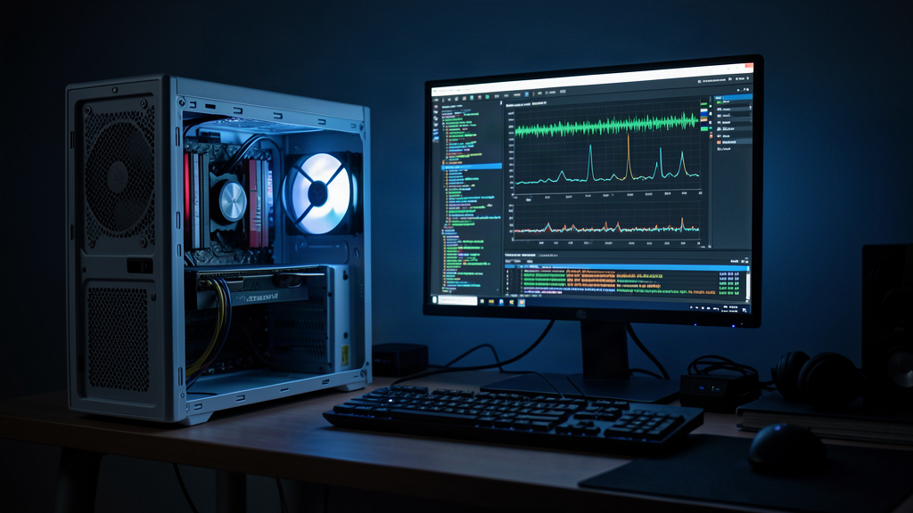
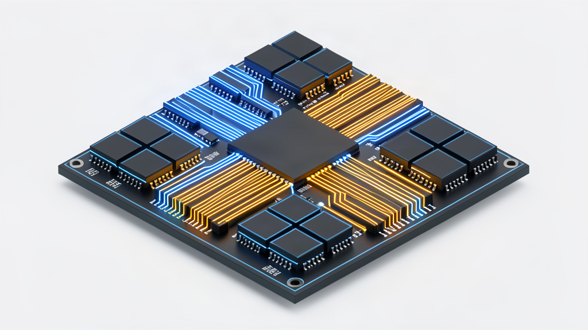
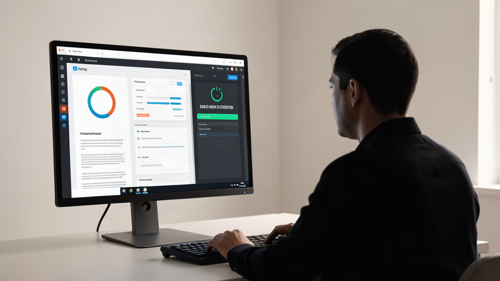

Самый опасный инженерный рефлекс — бросаться переписывать чужой движок, как только производительность упирается в потолок. Кажется, что авторы библиотеки чего-то не учли, и только собственный форк спасет положение.
Разработчик полтора месяца перекраивал llama.cpp, выжимая максимум из 20B MoE-модели на GTX 1660 Super с 6 ГБ памяти. Итог отрезвляет: кастомные костыли разгромно проиграли штатному флагу из коробки.

Бюджетный сетап и иллюзия контроля
Контекст понятен любому, кто гоняет нейросети дома. У автора была скромная конфигурация: GTX 1660 Super на 6 ГБ видеопамяти, 24 ГБ ОЗУ и SATA SSD. Задача — запустить Mixture of Experts модель gpt-oss-20b.
Дефолтный путь владельцев слабых карт — прописать -ngl 99, выгрузить все слои в VRAM и ждать чуда. На тяжелых моделях это ломается: память забивается, драйвер гоняет данные через шину в оперативку, и генерация превращается в слайд-шоу.
Автор решил переиграть архитектуру. Он полез в код движка, начал пилить свой форк, изобретать алгоритмы оффлоада и вручную раскидывать тензоры. Полтора месяца ушли на пересборки и ловлю багов. В голове рисовался идеальный комбайн.
Разгром на замерах: что делает штатный флаг
Когда дошло до замеров по строгому протоколу в репозитории Deadatreides/LLM-MEASUREMENTS, наступил холодный душ.
Автор сравнил свои патчи со стандартным релизом llama.cpp, где включен штатный флаг -fit (в свежих сборках — --fit). Единственный параметр раскатал полуторамесячный труд.
Звучит дерзко, но это просто цифры:
- На длинном контексте флаг
-fitдал ускорение в 2,44 раза по сравнению с ручной выгрузкой-ngl 99. - Память стабилизировалась без вылетов по переполнению VRAM.
- Инференс MoE-экспертов перестал захлебываться от пересылок между видеокартой и процессором.
Особо никакой магии нет: флаг -fit создан именно для автобалансировки ресурсов. Вместо бездумного сброса слоев на GPU он анализирует доступную память, держит резерв около 1 ГБ VRAM под вычисления и динамически распределяет веса. Система дёргает только нужное, не создавая затык в шине.

Ловушка оверинжиниринга: личные грабли
В реале расклад такой: эта история — классический диагноз. Мы слишком любим писать код и неохотно открываем документацию.
Я сам наступал на эти грабли. Собирая локальный контур на связке Antigravity CLI, Hermes и n8n, постоянно тянет написать кастомный Python-скрипт ради хитрой фильтрации. Тратишь выходные на микросервис, а потом находишь в CLI флаг, закрывающий задачу из коробки.
Купить себе головную боль вместо решения проблемы — главная ловушка энтузиаста. Мы путаем сложность решения с его пользой. Написать сотни строк своего кода кажется доблестью. Прочитать список аргументов через справку — скучной рутиной.
Десять минут проверки дешевле, чем два месяца в пустоту. Движки вроде llama.cpp развивают сотни людей. Они уже набили шишки об аллокацию памяти и упаковали лучшие практики в штатные флаги.

Сухой остаток: сначала мануал, потом код
Иногда самая дешёвая оптимизация — открыть документацию, а не изобретать велосипед.
Если локальная модель тормозит или падает по памяти, не спешите форкать репозиторий. Чеклист бережет недели жизни:
- Изучите штатные параметры памяти. В llama.cpp опции автоподбора вроде
-fitи настройка батча дают больше буста, чем слепой оффлоад слоев. - Проверяйте замеры в бою. Тестируйте скорость на реальных запросах с длинным контекстом, а не на пустых прогонах.
- Оцените цену кастомного кода. Любой форк — это груз поддержки, отстающий от апстрима уже через неделю.
Логика простая: лучший код — тот, который не пришлось писать своими руками.
А вы ловили себя на оверинжиниринге: сколько времени уходило на самодельный велосипед, пока не находился штатный переключатель? Напишите в комментариях свои истории с кастомными доработками.